Проектирование интерактивных Front-End инструментов, админок и кастомных модулей управления контентом.
Разработал приложения для ускорения работы с текстом и медиа данными.
* Разработал скрипт для парсинга и динамического форматирования внешних заметок (из Microsoft OneNote) в структурированный HTML-код.
Опыт верстки сайтов.
Плюс этот сайт сделан мной (плюс к портфолио). Для интерактивной анимации использую Anime.js.
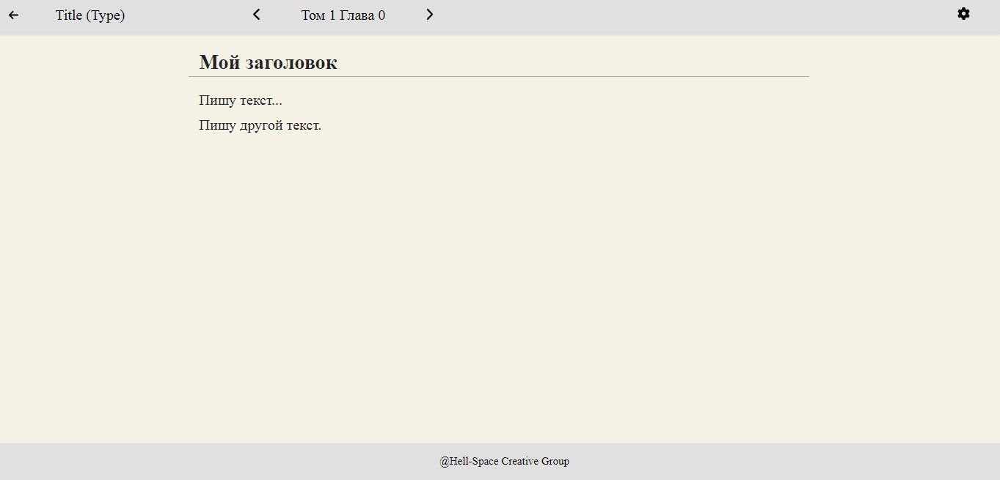
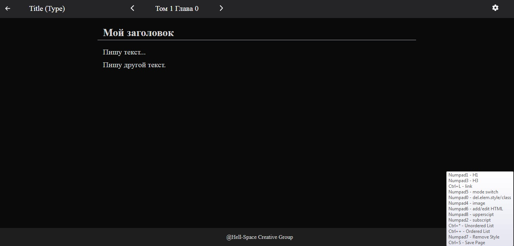
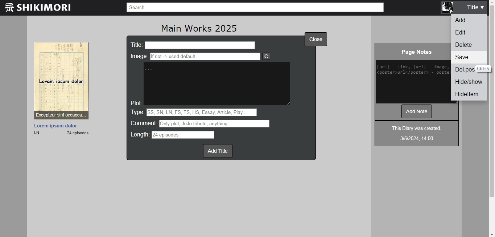
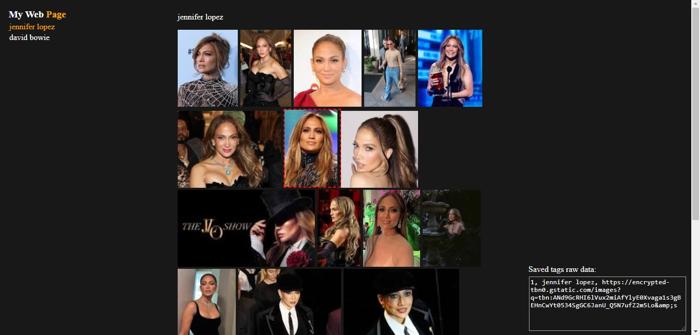
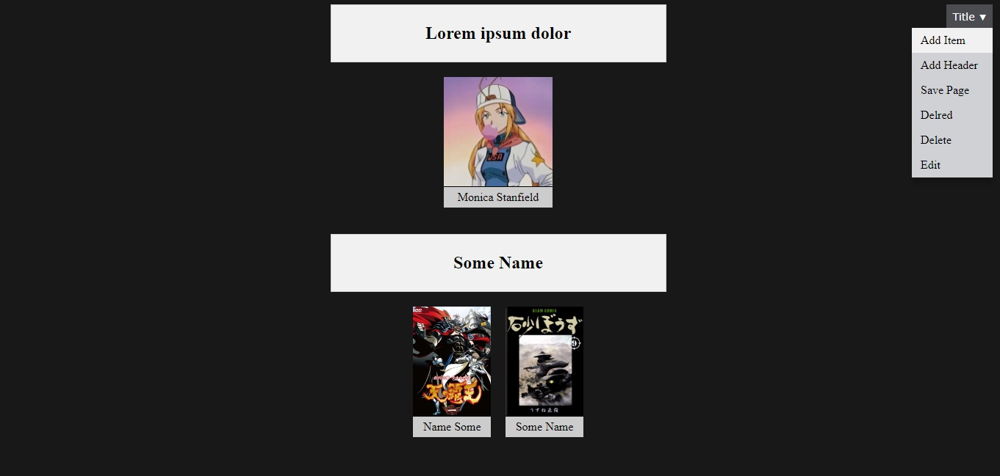
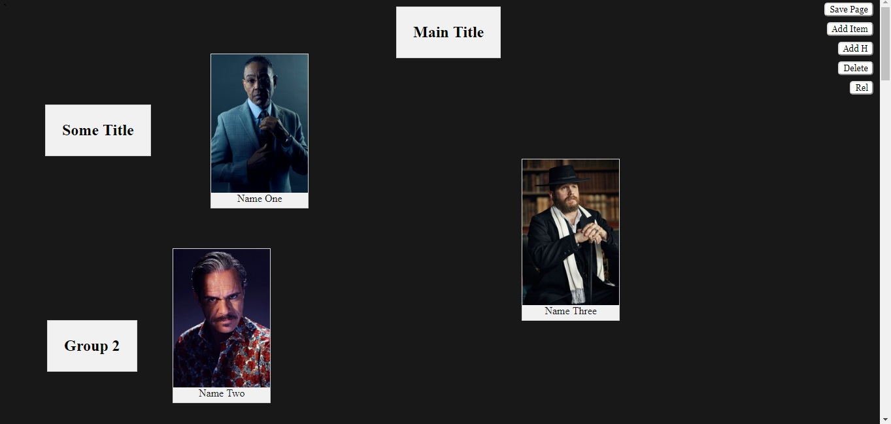
localStorage для кэширования сессий до момента скачивания финального документа.
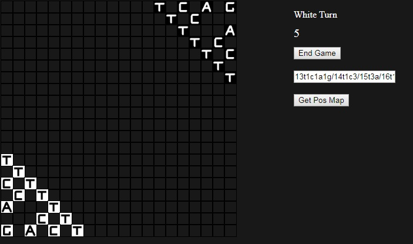
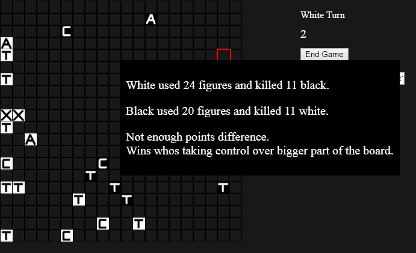
Знаю базовый PHP + MySQL (XAMPP/Apache) для локального развертывания веб-приложений.
* Имею опыт развертывания, администрирования, миграции (переноса на другие хостинги/домены) и наполнения контентом сайтов на WordPress.
Опыт переноса любого сайта на другой хостинг/домен.
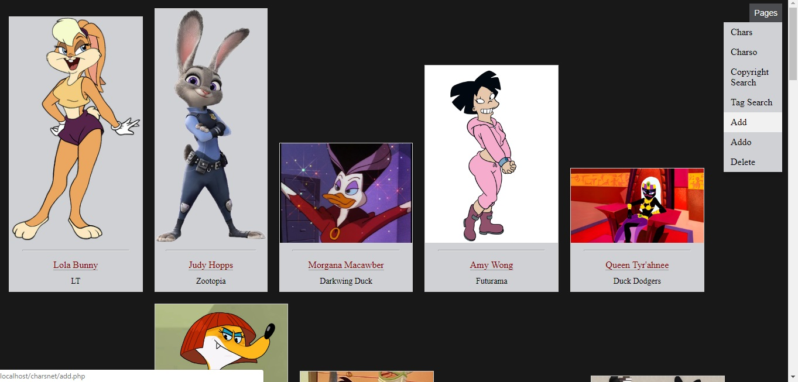
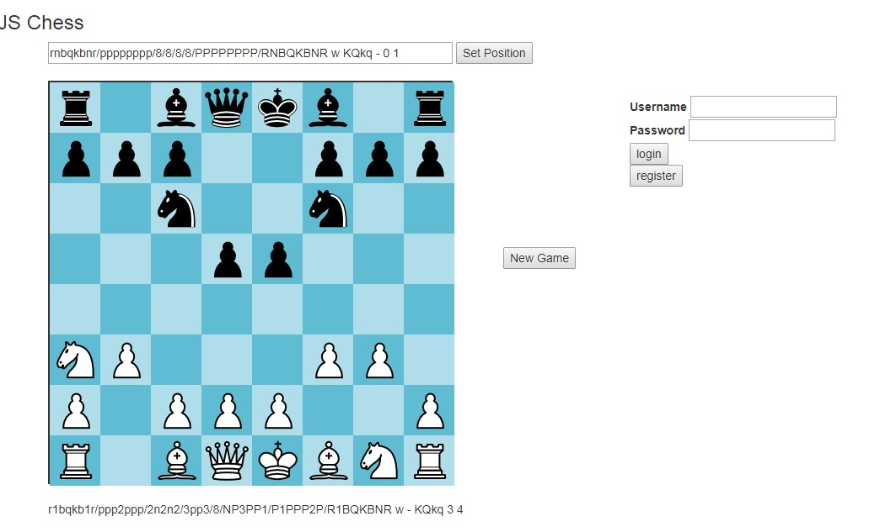
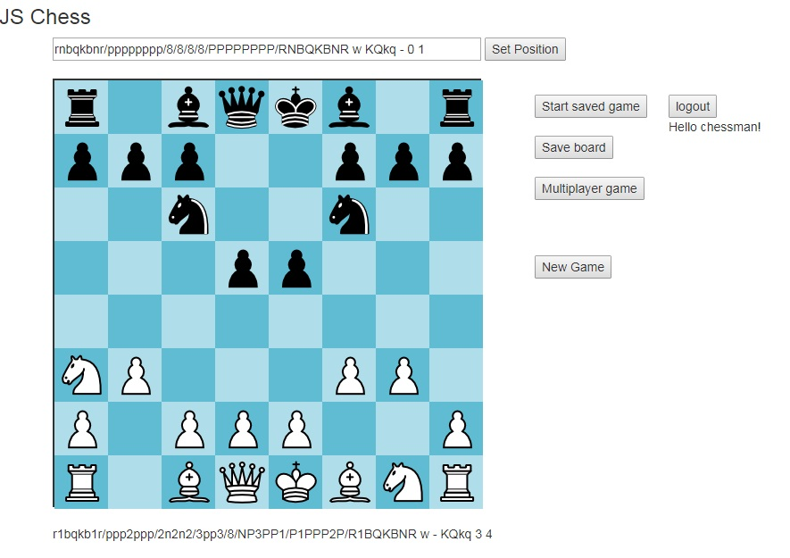
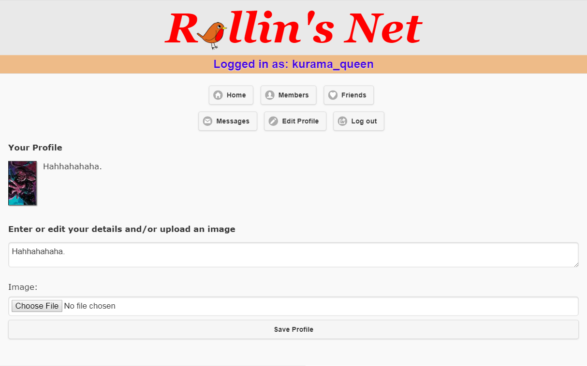
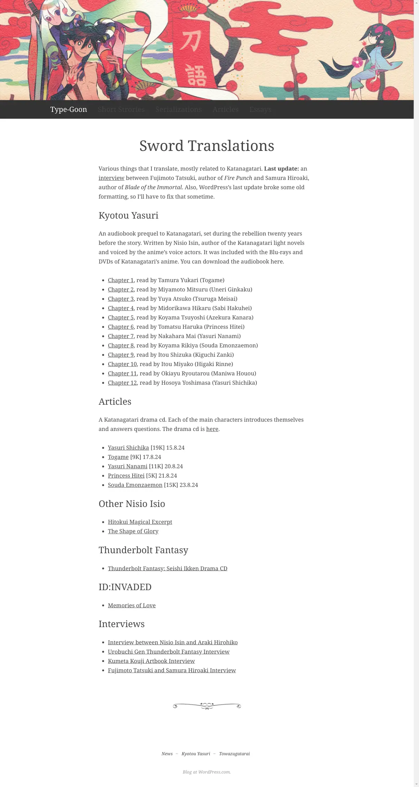
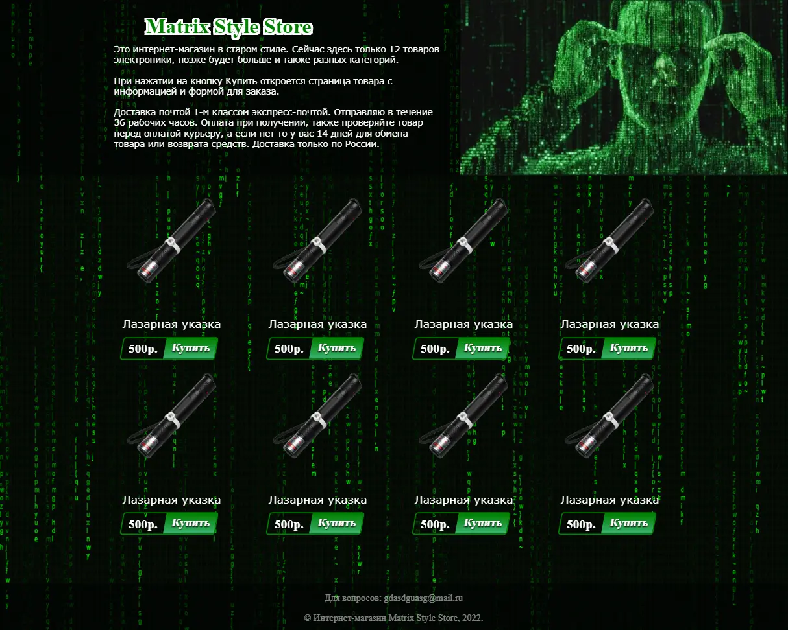
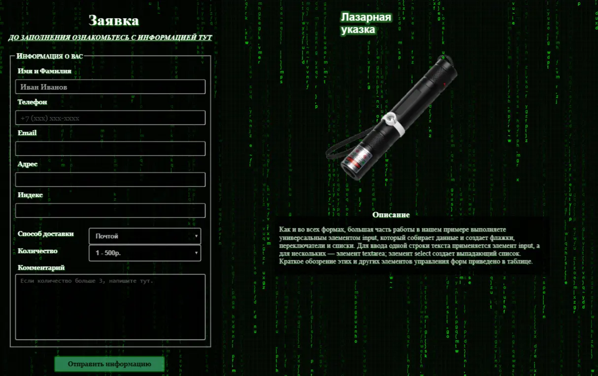
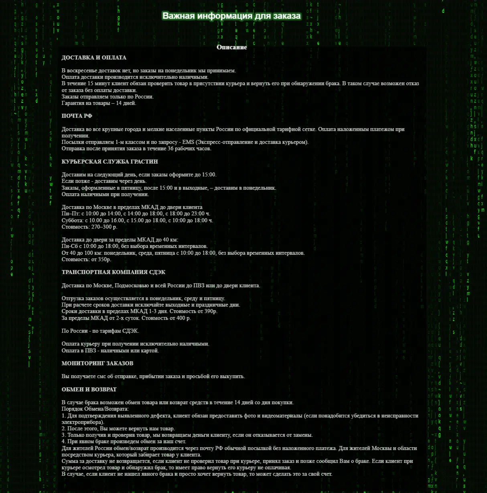